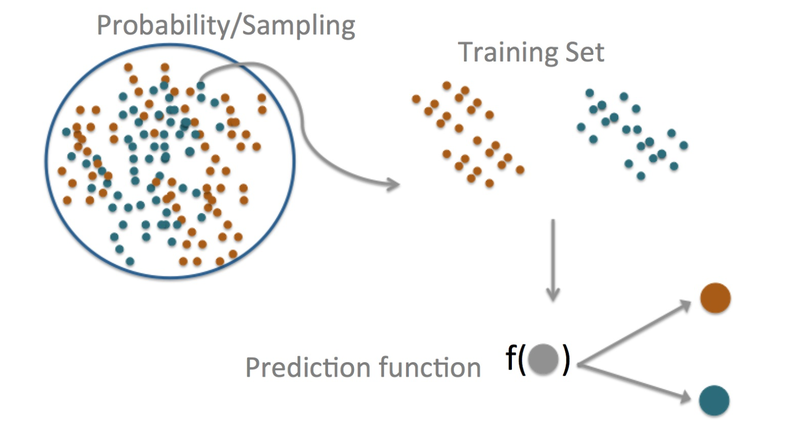
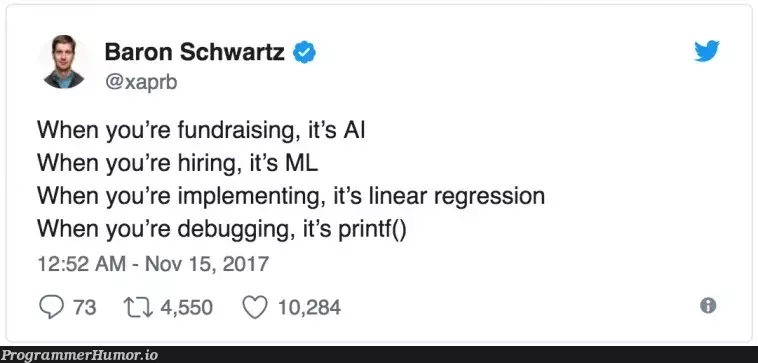

AI 2.0机器学习
从数据中学习预测规则：
什么是学习，怎样判断“学得好”
本讲要回答三个问题
机器
“学”的是什么？
从训练样本中学出预测函数 f，用于总体里的新样本。
训练集全对，
为什么还不够？
过拟合、内外样本误差、训练/测试划分与交叉验证。
怎样判断
“学得好”？
正确率为何会骗人；混淆矩阵、ROC、代价；回归的 MSE / RMSE。
AI 2.0：人给特征，机器学规则
构建特征 X
词频、大写字母长度、客户的年龄与行为……
Y = f ( X )
逻辑回归 · 分类决策树 · 朴素贝叶斯
预测目标 Y
是不是垃圾邮件？会不会违约？下月销量？
目标：f 在新样本上准。本讲重点，评价看“样本外”。
目标：理解 X 如何影响 Y（系数、显著性）。属于回归分析（L4）的主场。
1.0：人写规则（capitalAve > 2.4）；2.0：由数据决定阈值与权重。
什么是机器学习

预测问题的本质
总体中抽出的训练样本：(X, Y)
预测函数 f̂ ( X )
在整个总体的新样本上也预测得准，而不是只在训练集上
机器学习 = 以预测为目标的学习过程
针对经验性数据，让计算机模拟人类学习的准则，完成以预测为终极目标的一系列处理。
注意关键词是“预测”：好模型 ≠ 对历史拟合得好。
监督学习 · 分类
训练集：X = 特征（如颜色、形状），Y = 是否为苹果（离散标签）。
“学习”就是在损失函数指引下，一步步调参（此处为逻辑回归的梯度下降）。
监督学习 · 回归
训练集：X = 特征，Y = 连续实数。目标：找一条让误差平方和最小的线。
橘色虚线 = 残差；拖动滑块，让红色方块的总面积最小。
无监督学习 · 聚类
训练集只有 X，没有 Y。“分几类”本身就是需要判断的问题。
k 增大 SSE 必降，要找下降变缓的拐点。原稿：“可能是 5 类”。
学习范式 = 标签从哪来
有 Y
分类（Y 离散）· 回归（Y 连续）
本讲 · L4 · L5.2
无 Y
聚类 · 降维 · 异常检测
本讲：聚类
少量 Y
只有少量标签；或只有“正例 + 未标注”
奖励信号
通过试错与延迟奖励学策略
L6.2
让模型挑“最值得标注”的样本，省标注成本
把一个任务学到的知识用到另一个任务
学习“如何学习”，快速适应新任务
2026 视角：大模型预训练本质上是自监督学习——标签来自数据自身（下一个词），这是 AI 4.0（L7）的基础。⚠ 课堂补充，未单列文献。
泛化与过拟合
游戏：1, 3, ?, 7
填“5”最自然？但10000 也有一个三次多项式恰好穿过 4 个点。
数据有限时，“穿过所有点”的函数有无穷多个。选哪一个，靠的是对复杂度的约束（简单性）与样本外检验。
垃圾邮件：规则变复杂，只换来训练集的好看
只抽 10 封训练邮件，用“大写字母平均长度 capitalAve”写规则：
复杂度越高，越会“背题”
同一道理，换成分类树
分类决策树不断按特征切分空间，深度就是复杂度。
训练正确率一路升到 100%，测试正确率先升后平甚至下降：深树在“记噪声”。
基本框架：先划分，再学习，最后只考一次
清洗数据
缺失、异常、重复
划分数据
训练集 / 测试集
构建特征
只用训练集的信息
训练模型
交叉验证选超参数
测试评估
只用一次，报告样本外效果
⚠ 数据泄漏：测试集的信息一旦进入特征构建或调参，测试误差就不再“无辜”，会系统性乐观。
K 折交叉验证：轮流当考场
CV 误差最小的次数：–；此时测试误差 –。
只用训练集就能挑出接近最优的复杂度。
模型的度量
正确率是好度量吗？
垃圾 1813（39.4%）· 正常 2788（60.6%）
任何模型都要先打败基线。而当类别极不平衡时，“全判正常”的正确率本身就高得吓人。
正类越稀有，同样的模型“正确率”越高，但精确率断崖下跌。预设的 1% / 0.1% 为假设值。
混淆矩阵：阈值决定四种结果
| 真实：垃圾 | 真实：正常 | |
|---|---|---|
| 预测：垃圾 | TP 命中 – | FP 误杀 – |
| 预测：正常 | FN 漏判 – | TN 放行 – |
ROC：把所有阈值画在一张图
横轴 FPR（误杀率），纵轴 TPR（召回率）。阈值从高到低，点沿曲线从左下走到右上。
AUC 的含义：随机抽一封垃圾、一封正常，模型给垃圾打分更高的概率。0.5 = 抛硬币，1 = 完美。
真实数据：哪个特征更会分
UCI Spambase 全部 4601 封。规则“特征 > t → 垃圾”，扫描 t 得到一条 ROC。
| 特征 | AUC |
|---|
度量要服从业务代价
漏判一封垃圾，代价 = 1；误杀一封正常邮件（可能是客户的订单），代价 = c。
c 越大，阈值越要保守，宁可漏判，也别误杀。指标不是技术选择，是业务选择。
回归的度量：误差的平均大小
直线固定不动；拖动最右边那个点的偏离量，观察哪个指标对异常值更敏感。
平方放大大误差：MSE / RMSE 惩罚异常值；MAE 更稳健。选哪个，看业务上“大错”是否更不可接受。
ML 在 2026 年的位置

名字在变，方法论不变
无论叫 ML 还是 AI，划分数据 · 选指标 · 样本外检验是同一套。
在企业里，先上简单、可解释的基线（逻辑回归 / 树），再谈复杂模型。⚠ 课堂建议，非统计结论。
表格数据上，树模型为何难以被取代
Grinsztajn 等（NeurIPS 2022）：45 个数据集、约 1 万样本量级的中等规模表格数据，树模型（XGBoost、随机森林）仍优于深度网络。作者给出三点原因：
对无用特征更稳健
表格里常有大量信息量很低的列；MLP 受其干扰更大。
擅长不规则目标函数
树学的是分段常数函数，神经网络偏好平滑函数。
特征不可随意旋转
表格每列有独立含义；MLP 旋转不变，树逐特征切分。
这是 2022 年的结论，下一页看 2025–2026 的变化。
新变化：“预训练”进入表格数据
TabPFN（Nature）为同行评议；2.5 版的基准结果来自开发方技术报告，应视为自报。论文自述：数据更大、回归更“不平滑”时，XGBoost / CatBoost / AutoGluon 仍可能更好。
管理者的落地五问
Y 是什么？
预测目标是否对应真实业务价值，且能拿到标签？
X 从哪来？
预测时刻能获得吗？会不会泄漏未来信息？
基线是什么？
“全判多数类”或现有规则是多少？必须先打败它。
指标与代价？
误杀与漏判各值多少钱？阈值怎么定？
上线后呢？
数据分布变化时，如何监控并重训？
小结：学习，就是泛化
预测问题
从样本学 f，目标是总体上的新样本。分类 / 回归 / 聚类。
泛化
内样本误差可以为 0；用测试集与交叉验证防过拟合。
度量
先看基线；混淆矩阵 · ROC · 代价；回归看 MSE / RMSE。
2026
树与基础模型并存；落地先问 Y、X、基线、代价。
在没见过的数据上做对，才是。
课后思考题
你所在行业里，哪个预测任务的“误杀 / 漏判”代价最不对称？阈值该怎么定？
一个模型在历史数据上准确率 99%，你会追问哪三个问题？
客户流失预测里，“全判不流失”的基线正确率是多少？为什么不能直接用正确率？
L5.2 · 机器学习方法
逻辑回归、决策树、朴素贝叶斯的原理与实践。
R1 Nature：TabPFN
R3 NeurIPS 2022 表格数据基准
R4 scikit-learn 1.9 发布说明
参考文献 R1–R5
R1 Hollmann et al.：Accurate predictions on small data with a tabular foundation model, Nature, 2025-01 — nature.com/articles/s41586-024-08328-6
R2 Prior Labs：TabPFN-2.5 model report, arXiv:2511.08667 (v2, 2026-02-05) — arxiv.org/abs/2511.08667；priorlabs.ai/technical-reports/tabpfn-2-5-model-report
R3 Grinsztajn, Oyallon, Varoquaux：Why do tree-based models still outperform deep learning on typical tabular data? NeurIPS 2022 Datasets & Benchmarks — papers.nips.cc/paper_files/paper/2022/hash/0378c7692da36807bdec87ab043cdadc-Abstract-Datasets_and_Benchmarks.html
R4 scikit-learn 1.9 release（2026-06）与 1.9.1（2026-09-11）— blog.scikit-learn.org/updates/release-1-9/；scikit-learn.org/stable/whats_new/v1.9.html
R5 UCI Machine Learning Repository：Spambase（= R 包 kernlab::spam，4601 封 / 1813 垃圾），数值由 L3 复算
P 原 PPT：Materials/Lecture_5.1_ML.pptx（P4–P5 定义、P9 范式、P10–P13 插值游戏、P15–P18 规则实验、P19–P20 框架、P21–P26 分类度量、P28 回归度量、P29 K 折、P30 推文）
注 交互页中的模拟数据（苹果、回归点、聚类、sin 曲线、双月牙、双正态得分）均为教学合成，非真实研究结果；真实数据仅 Spambase。